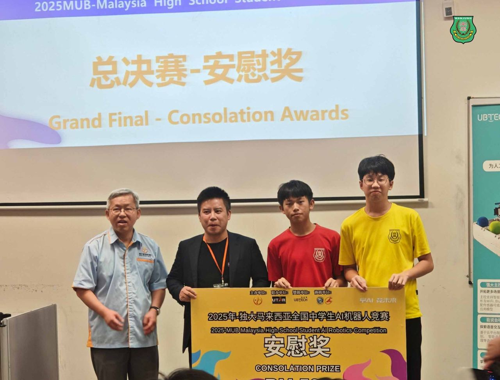
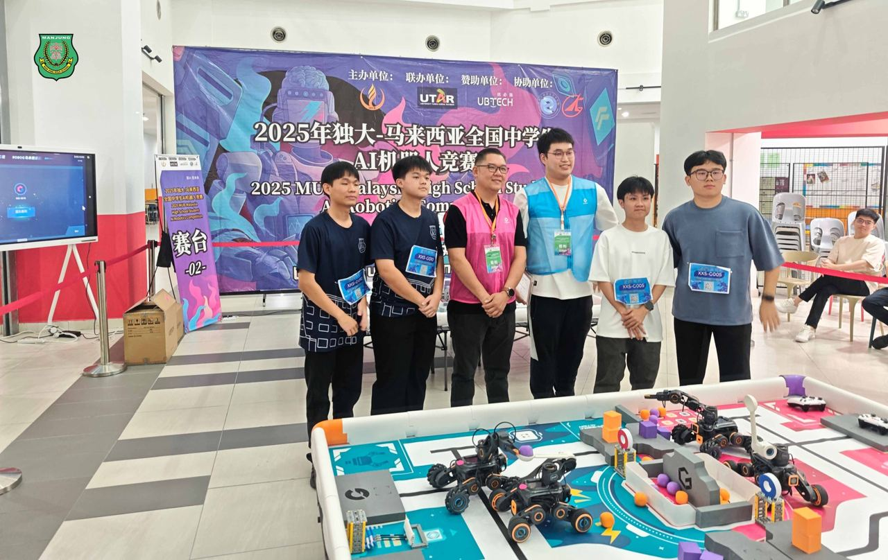
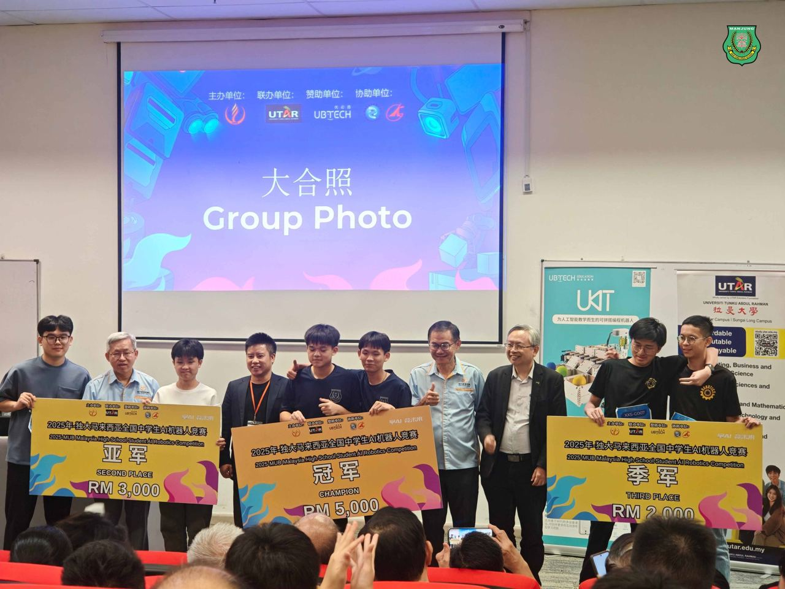
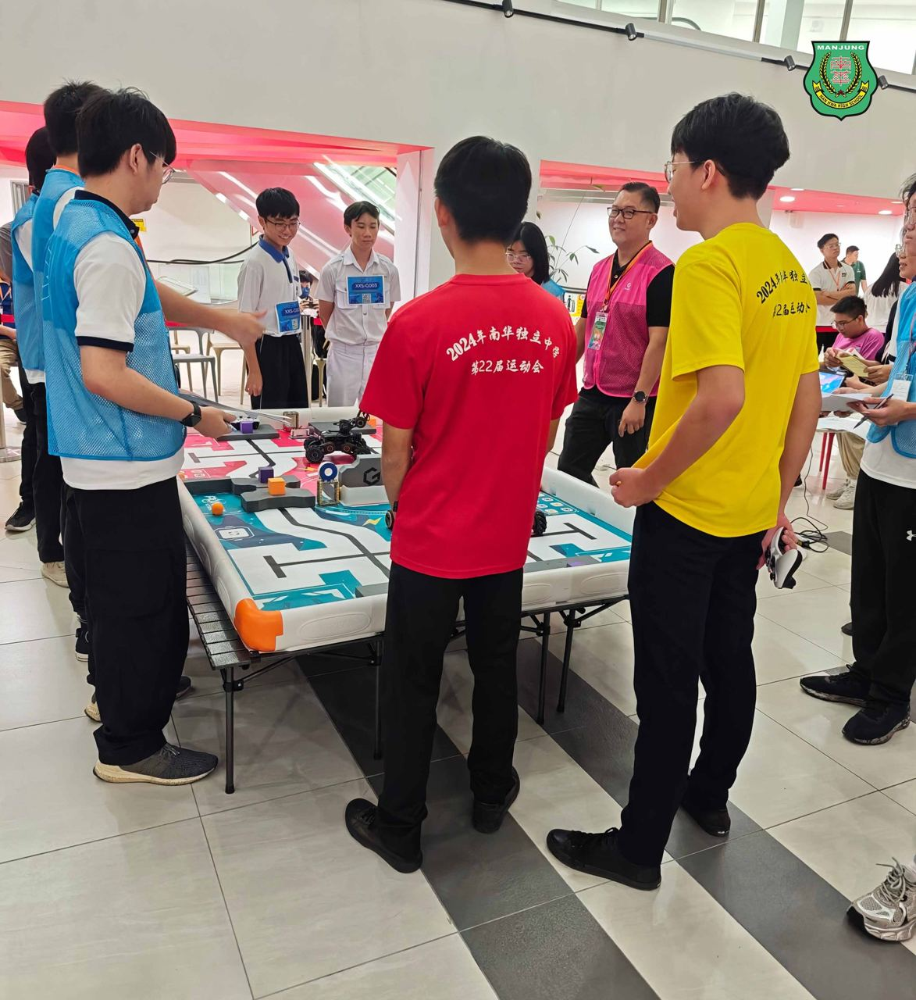

🏆全国AI机器人竞赛 🏆
🏆全国AI机器人竞赛 🏆
南华独中勇夺冠军与殿军
刘杰、周锐轩 #荣膺全国冠军
雷挺盛、张宇峰晋级四强勇夺殿军
在《2025年独大—马来西亚中学生人工智能机器人竞赛》中，南华独中代表队于全国108支队伍中脱颖而出，一举夺得冠军及殿军佳绩，为校争光，载誉而归 。
🥇冠军：刘杰 与 周锐轩
刘杰与周锐轩以出色的逻辑思维、精准的编程技巧及流畅的操作配合，成功挑战赛事终极任务，荣获全国冠军，并赢得RM5000奖金及中国短期科技培训机会。
🏅殿军与安慰奖：雷挺盛 与 张宇峰
雷挺盛与张宇峰亦表现亮眼，晋级全国四强，在决赛中展现沉着应战与扎实实力，夺得殿军，为校再添光彩。
🎤#学生锲而不舍；#教师勤修乐教
校长陈丽冰博士致贺：“锲而舍之，朽木不折；锲而不舍，金石可镂。同学们凭着对科技的热忱与不懈努力，在学习与实作中不断突破自我，展现了极高的天赋与毅力，实属可喜可贺。”陈校长特别指出：“前沿的科技辅以深厚的人文底蕴，本校致力于营造良好的AI学习环境，感谢林继汉老师的悉心指导与陪伴，他不仅是团队的技术导师，更是同学们在学习路上的精神榜样。”
🧠#跟上时代步伐，#培育未来科技人才
本次竞赛自3月起进行两个月的线上模块化编程培训，成功晋级的队伍再于5月接受AI机器人设计实操训练，并于6月14日在拉曼大学双溪龙校区参与全国总决赛。赛事主题为“用人工智能机器人赋能生活，创造可持续的未来”，涵盖编程实作、任务解决与创新应用，考验学生全方位能力。
本校代表队展现的佳绩并非一蹴而就，而是建立于学校长期推动AI、STEM教育成果的体现。近年来，学校在校本课程中陆续引进AI与编程课程，并鼓励学生参加各类国内外科技竞赛，让科技素养深植校园文化。
陈校长表示，未来南华将持续投入AI教育资源，培养更多具备国际视野与创新能力的科技新星，“本校的宗旨是培养‘迎领’21世界中华文化素养领袖人才，不仅塑造学生人文与科技素养，更是让他们成为推动未来社会科技进步的重要力量。”




